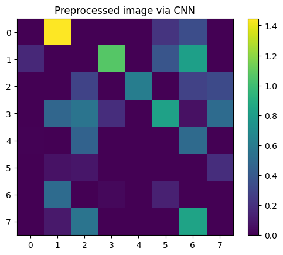

Modelos mixtos para evaluar la presencia o nivel de Alzheimer en un paciente#
import tensorflow as tf
tf.random.set_seed(123)
import glob
import matplotlib.pyplot as plt
import numpy as np
np.random.seed(123)
import seaborn as sns
import pandas as pd
from sklearn.decomposition import PCA
from sklearn.svm import SVC
from xgboost import XGBClassifier
from sklearn.neighbors import KNeighborsClassifier
from sklearn.naive_bayes import GaussianNB
from sklearn.metrics import classification_report
from sklearn.model_selection import train_test_split
paths = glob.glob('.\\data\\*')
dict_path_classes = {f"{idx}":path.split('\\')[-1] for idx, path in enumerate(paths)}
dict_path_classes
{}
X = []
y = []
for key, value in dict_path_classes.items():
print(key, value)
for path in glob.glob(f'.\\data\\{value}\\*.jpg'):
img = plt.imread(path)
X.append(img.reshape(128,128,1))
y.append(key)
dfy = pd.DataFrame(data=y, columns=["labels"])
dfy.value_counts()
Series([], Name: count, dtype: int64)
X = np.array(X)
y = np.array(y)
X_PCA=pd.DataFrame(np.array([i.reshape(128,128).flatten() for i in X]))
projections = PCA(3,random_state=123).fit_transform(X_PCA)
---------------------------------------------------------------------------
ValueError Traceback (most recent call last)
Cell In[7], line 1
----> 1 projections = PCA(3,random_state=123).fit_transform(X_PCA)
File ~\miniconda3\envs\ml_venv\lib\site-packages\sklearn\utils\_set_output.py:140, in _wrap_method_output.<locals>.wrapped(self, X, *args, **kwargs)
138 @wraps(f)
139 def wrapped(self, X, *args, **kwargs):
--> 140 data_to_wrap = f(self, X, *args, **kwargs)
141 if isinstance(data_to_wrap, tuple):
142 # only wrap the first output for cross decomposition
143 return_tuple = (
144 _wrap_data_with_container(method, data_to_wrap[0], X, self),
145 *data_to_wrap[1:],
146 )
File ~\miniconda3\envs\ml_venv\lib\site-packages\sklearn\base.py:1151, in _fit_context.<locals>.decorator.<locals>.wrapper(estimator, *args, **kwargs)
1144 estimator._validate_params()
1146 with config_context(
1147 skip_parameter_validation=(
1148 prefer_skip_nested_validation or global_skip_validation
1149 )
1150 ):
-> 1151 return fit_method(estimator, *args, **kwargs)
File ~\miniconda3\envs\ml_venv\lib\site-packages\sklearn\decomposition\_pca.py:460, in PCA.fit_transform(self, X, y)
437 @_fit_context(prefer_skip_nested_validation=True)
438 def fit_transform(self, X, y=None):
439 """Fit the model with X and apply the dimensionality reduction on X.
440
441 Parameters
(...)
458 C-ordered array, use 'np.ascontiguousarray'.
459 """
--> 460 U, S, Vt = self._fit(X)
461 U = U[:, : self.n_components_]
463 if self.whiten:
464 # X_new = X * V / S * sqrt(n_samples) = U * sqrt(n_samples)
File ~\miniconda3\envs\ml_venv\lib\site-packages\sklearn\decomposition\_pca.py:483, in PCA._fit(self, X)
477 if issparse(X):
478 raise TypeError(
479 "PCA does not support sparse input. See "
480 "TruncatedSVD for a possible alternative."
481 )
--> 483 X = self._validate_data(
484 X, dtype=[np.float64, np.float32], ensure_2d=True, copy=self.copy
485 )
487 # Handle n_components==None
488 if self.n_components is None:
File ~\miniconda3\envs\ml_venv\lib\site-packages\sklearn\base.py:604, in BaseEstimator._validate_data(self, X, y, reset, validate_separately, cast_to_ndarray, **check_params)
602 out = X, y
603 elif not no_val_X and no_val_y:
--> 604 out = check_array(X, input_name="X", **check_params)
605 elif no_val_X and not no_val_y:
606 out = _check_y(y, **check_params)
File ~\miniconda3\envs\ml_venv\lib\site-packages\sklearn\utils\validation.py:969, in check_array(array, accept_sparse, accept_large_sparse, dtype, order, copy, force_all_finite, ensure_2d, allow_nd, ensure_min_samples, ensure_min_features, estimator, input_name)
967 n_samples = _num_samples(array)
968 if n_samples < ensure_min_samples:
--> 969 raise ValueError(
970 "Found array with %d sample(s) (shape=%s) while a"
971 " minimum of %d is required%s."
972 % (n_samples, array.shape, ensure_min_samples, context)
973 )
975 if ensure_min_features > 0 and array.ndim == 2:
976 n_features = array.shape[1]
ValueError: Found array with 0 sample(s) (shape=(0, 1)) while a minimum of 1 is required by PCA.
df_projections = pd.DataFrame(data=projections, columns=[f'x{i}' for i in range(1,4)])
df_projections
| x1 | x2 | x3 | |
|---|---|---|---|
| 0 | 3189.331710 | 1115.094249 | 190.914037 |
| 1 | 3016.047018 | 433.588154 | 379.615476 |
| 2 | 3712.137280 | -930.395994 | 1585.156292 |
| 3 | 3407.726277 | -1676.888600 | 1268.490975 |
| 4 | 3326.014616 | 1147.149572 | 1820.782440 |
| ... | ... | ... | ... |
| 6395 | -2736.844356 | -724.539704 | -115.871220 |
| 6396 | -2350.664192 | -1152.603625 | 321.430454 |
| 6397 | -2520.322113 | -1522.065152 | -642.202712 |
| 6398 | -2007.154052 | 624.855286 | 1943.445892 |
| 6399 | -2540.012340 | -360.448342 | 818.893822 |
6400 rows × 3 columns
df_projections['label'] = y_b
df_projections
| x1 | x2 | x3 | label | |
|---|---|---|---|---|
| 0 | 3189.331710 | 1115.094249 | 190.914037 | 1 |
| 1 | 3016.047018 | 433.588154 | 379.615476 | 1 |
| 2 | 3712.137280 | -930.395994 | 1585.156292 | 1 |
| 3 | 3407.726277 | -1676.888600 | 1268.490975 | 1 |
| 4 | 3326.014616 | 1147.149572 | 1820.782440 | 1 |
| ... | ... | ... | ... | ... |
| 6395 | -2736.844356 | -724.539704 | -115.871220 | 1 |
| 6396 | -2350.664192 | -1152.603625 | 321.430454 | 1 |
| 6397 | -2520.322113 | -1522.065152 | -642.202712 | 1 |
| 6398 | -2007.154052 | 624.855286 | 1943.445892 | 1 |
| 6399 | -2540.012340 | -360.448342 | 818.893822 | 1 |
6400 rows × 4 columns
sns.scatterplot(data=df_projections,x=projections[:,0], y=projections[:,1], hue='label')
<Axes: >
sns.kdeplot(data=df_projections,x=projections[:,0], y=projections[:,1], hue='label')
<Axes: >
def create_dataset_b():
y_b = []
for label in y:
if label in ["0","1", "3"]:
y_b.append(1)
else:
y_b.append(0)
return np.array(y_b)
y_b = create_dataset_b()
y_b.shape
(6400,)
df1 = pd.DataFrame(data=y_b, columns=["labels"])
df1.value_counts()
labels
0 3200
1 3200
Name: count, dtype: int64
model = tf.keras.models.load_model("cnn_model/best_model.h5", compile=False)
intermediate_layer_model = tf.keras.models.Model(inputs=model.input, outputs=model.get_layer('MLP_3').output)
BATCH_SIZE = 12
ds = tf.data.Dataset.from_tensor_slices(tensors=(X, y_b))
ds = ds.shuffle(buffer_size = len(y_b), seed=123).batch(batch_size=BATCH_SIZE)
DB1 = intermediate_layer_model.predict(ds)
1/534 [..............................] - ETA: 14s
534/534 [==============================] - 2s 4ms/step
plt.imshow(DB1[0].reshape(8,8), cmap='viridis', interpolation='nearest')
plt.colorbar()
plt.title("Preprocessed image via CNN")
plt.show()

DB1.shape
(6400, 64)
DB2=PCA(120,random_state=123).fit_transform(X_PCA)
DB3=pd.DataFrame(np.hstack([DB1,DB2]))
DB3
| 0 | 1 | 2 | 3 | 4 | 5 | 6 | 7 | 8 | 9 | ... | 174 | 175 | 176 | 177 | 178 | 179 | 180 | 181 | 182 | 183 | |
|---|---|---|---|---|---|---|---|---|---|---|---|---|---|---|---|---|---|---|---|---|---|
| 0 | 0.000000 | 1.446085 | 0.000000 | 0.000000 | 0.000000 | 0.220005 | 0.340053 | 0.000000 | 0.165161 | 0.000000 | ... | 16.418521 | -26.545927 | -313.019964 | -62.398341 | -171.976458 | 5.179411 | -167.943635 | 280.171491 | 86.169590 | -20.975314 |
| 1 | 1.363026 | 0.000000 | 0.000000 | 0.000000 | 2.526590 | 0.000000 | 1.761688 | 0.000000 | 0.000000 | 2.488903 | ... | -56.953287 | -163.102576 | 87.841717 | 266.236128 | 168.150606 | -189.236477 | 139.686717 | 31.534217 | 76.940799 | -163.133223 |
| 2 | 0.000000 | 2.960914 | 3.936674 | 0.000000 | 0.000000 | 0.375904 | 0.932000 | 1.943815 | 0.000000 | 0.000000 | ... | 261.611099 | 63.945031 | -67.488780 | 40.346983 | -298.128150 | -79.484372 | 82.347982 | -91.118446 | 80.662067 | -61.796165 |
| 3 | 0.328585 | 0.000000 | 0.000000 | 0.000000 | 2.199944 | 0.000000 | 0.989349 | 0.000000 | 0.000000 | 2.020577 | ... | 168.998549 | -64.085660 | -44.175040 | -71.673662 | 59.926607 | -219.319901 | -83.815067 | 53.838871 | 45.400737 | -166.733796 |
| 4 | 0.695786 | 0.828800 | 0.000000 | 0.008905 | 0.251951 | 0.000000 | 0.884143 | 0.846976 | 0.000000 | 0.882307 | ... | -118.350422 | 40.809465 | 293.364044 | -16.166208 | -434.505139 | -161.029784 | -82.443938 | 306.987638 | -84.237931 | 46.921116 |
| ... | ... | ... | ... | ... | ... | ... | ... | ... | ... | ... | ... | ... | ... | ... | ... | ... | ... | ... | ... | ... | ... |
| 6395 | 0.218643 | 0.311750 | 0.153332 | 0.000000 | 0.000000 | 0.000000 | 0.536161 | 0.384919 | 0.000000 | 0.000000 | ... | 213.694386 | -53.654604 | 26.212131 | -254.429311 | 228.626998 | 88.555920 | 178.670648 | -293.211202 | -36.189756 | -244.476480 |
| 6396 | 0.000000 | 3.959794 | 4.290563 | 0.000000 | 0.000000 | 0.611869 | 0.461825 | 2.187307 | 0.000000 | 0.000000 | ... | 488.011504 | -27.235276 | -34.970971 | -177.232789 | -107.556041 | 98.606397 | -245.437705 | 144.912033 | -53.246151 | -110.806509 |
| 6397 | 0.000000 | 3.372554 | 3.248134 | 0.000000 | 0.000000 | 0.511671 | 0.584862 | 1.119557 | 0.183879 | 0.000000 | ... | -365.926588 | -64.109221 | -166.542308 | 89.235854 | 160.174382 | 260.136625 | 153.683672 | -3.190700 | 97.441249 | -247.922596 |
| 6398 | 0.000000 | 5.846646 | 3.079955 | 0.000000 | 0.000000 | 0.000000 | 0.643220 | 0.000000 | 0.000000 | 0.000000 | ... | 51.479249 | 47.600027 | 14.716997 | -188.281636 | 40.841524 | 20.996657 | 238.690987 | -132.720025 | 168.599356 | 167.001016 |
| 6399 | 1.987376 | 0.000000 | 0.000000 | 0.000000 | 3.343105 | 0.000000 | 1.047345 | 0.000000 | 0.000000 | 3.896128 | ... | -193.735792 | 195.460331 | 185.774051 | 137.129662 | -7.706752 | 137.928916 | -82.861191 | 124.447079 | -379.914786 | -208.518121 |
6400 rows × 184 columns
svm_model = SVC(random_state=123)
xb_model = XGBClassifier(random_state=123)
knn_model = KNeighborsClassifier()
nb_model = GaussianNB()
X_train_, X_test_, y_train_, y_test_ = train_test_split(DB3,y_b, random_state=123, test_size=0.2)
SVM#
svm_model.fit(X_train_,y_train_)
print(classification_report(y_test_,svm_model.predict(X_test_)))
precision recall f1-score support
0 0.93 0.95 0.94 639
1 0.95 0.93 0.94 641
accuracy 0.94 1280
macro avg 0.94 0.94 0.94 1280
weighted avg 0.94 0.94 0.94 1280
XB#
xb_model.fit(X_train_,y_train_)
print(classification_report(y_test_,xb_model.predict(X_test_)))
c:\Users\Lab6k\AppData\Local\miniconda3\envs\ml\lib\site-packages\xgboost\data.py:335: FutureWarning: is_sparse is deprecated and will be removed in a future version. Check `isinstance(dtype, pd.SparseDtype)` instead.
if is_sparse(dtype):
c:\Users\Lab6k\AppData\Local\miniconda3\envs\ml\lib\site-packages\xgboost\data.py:338: FutureWarning: is_categorical_dtype is deprecated and will be removed in a future version. Use isinstance(dtype, CategoricalDtype) instead
is_categorical_dtype(dtype) or is_pa_ext_categorical_dtype(dtype)
c:\Users\Lab6k\AppData\Local\miniconda3\envs\ml\lib\site-packages\xgboost\data.py:384: FutureWarning: is_categorical_dtype is deprecated and will be removed in a future version. Use isinstance(dtype, CategoricalDtype) instead
if is_categorical_dtype(dtype):
c:\Users\Lab6k\AppData\Local\miniconda3\envs\ml\lib\site-packages\xgboost\data.py:359: FutureWarning: is_categorical_dtype is deprecated and will be removed in a future version. Use isinstance(dtype, CategoricalDtype) instead
return is_int or is_bool or is_float or is_categorical_dtype(dtype)
precision recall f1-score support
0 0.97 0.97 0.97 639
1 0.97 0.97 0.97 641
accuracy 0.97 1280
macro avg 0.97 0.97 0.97 1280
weighted avg 0.97 0.97 0.97 1280
c:\Users\Lab6k\AppData\Local\miniconda3\envs\ml\lib\site-packages\xgboost\data.py:335: FutureWarning: is_sparse is deprecated and will be removed in a future version. Check `isinstance(dtype, pd.SparseDtype)` instead.
if is_sparse(dtype):
c:\Users\Lab6k\AppData\Local\miniconda3\envs\ml\lib\site-packages\xgboost\data.py:338: FutureWarning: is_categorical_dtype is deprecated and will be removed in a future version. Use isinstance(dtype, CategoricalDtype) instead
is_categorical_dtype(dtype) or is_pa_ext_categorical_dtype(dtype)
c:\Users\Lab6k\AppData\Local\miniconda3\envs\ml\lib\site-packages\xgboost\data.py:384: FutureWarning: is_categorical_dtype is deprecated and will be removed in a future version. Use isinstance(dtype, CategoricalDtype) instead
if is_categorical_dtype(dtype):
c:\Users\Lab6k\AppData\Local\miniconda3\envs\ml\lib\site-packages\xgboost\data.py:359: FutureWarning: is_categorical_dtype is deprecated and will be removed in a future version. Use isinstance(dtype, CategoricalDtype) instead
return is_int or is_bool or is_float or is_categorical_dtype(dtype)
KNN#
knn_model.fit(X_train_,y_train_)
print(classification_report(y_test_,knn_model.predict(X_test_)))
Exception in thread Thread-6:
Traceback (most recent call last):
File "c:\Users\Lab6k\AppData\Local\miniconda3\envs\ml\lib\threading.py", line 980, in _bootstrap_inner
self.run()
File "c:\Users\Lab6k\AppData\Local\miniconda3\envs\ml\lib\threading.py", line 917, in run
self._target(*self._args, **self._kwargs)
File "c:\Users\Lab6k\AppData\Local\miniconda3\envs\ml\lib\subprocess.py", line 1495, in _readerthread
buffer.append(fh.read())
File "c:\Users\Lab6k\AppData\Local\miniconda3\envs\ml\lib\codecs.py", line 322, in decode
(result, consumed) = self._buffer_decode(data, self.errors, final)
UnicodeDecodeError: 'utf-8' codec can't decode byte 0xa0 in position 16: invalid start byte
precision recall f1-score support
0 0.95 0.98 0.96 639
1 0.98 0.95 0.96 641
accuracy 0.96 1280
macro avg 0.96 0.96 0.96 1280
weighted avg 0.96 0.96 0.96 1280
c:\Users\Lab6k\AppData\Local\miniconda3\envs\ml\lib\site-packages\joblib\externals\loky\backend\context.py:136: UserWarning: Could not find the number of physical cores for the following reason:
found 0 physical cores < 1
Returning the number of logical cores instead. You can silence this warning by setting LOKY_MAX_CPU_COUNT to the number of cores you want to use.
warnings.warn(
File "c:\Users\Lab6k\AppData\Local\miniconda3\envs\ml\lib\site-packages\joblib\externals\loky\backend\context.py", line 282, in _count_physical_cores
raise ValueError(f"found {cpu_count_physical} physical cores < 1")
Naive Bayes#
nb_model.fit(X_train_,y_train_)
print(classification_report(y_test_,nb_model.predict(X_test_)))
precision recall f1-score support
0 0.69 0.69 0.69 639
1 0.69 0.68 0.69 641
accuracy 0.69 1280
macro avg 0.69 0.69 0.69 1280
weighted avg 0.69 0.69 0.69 1280